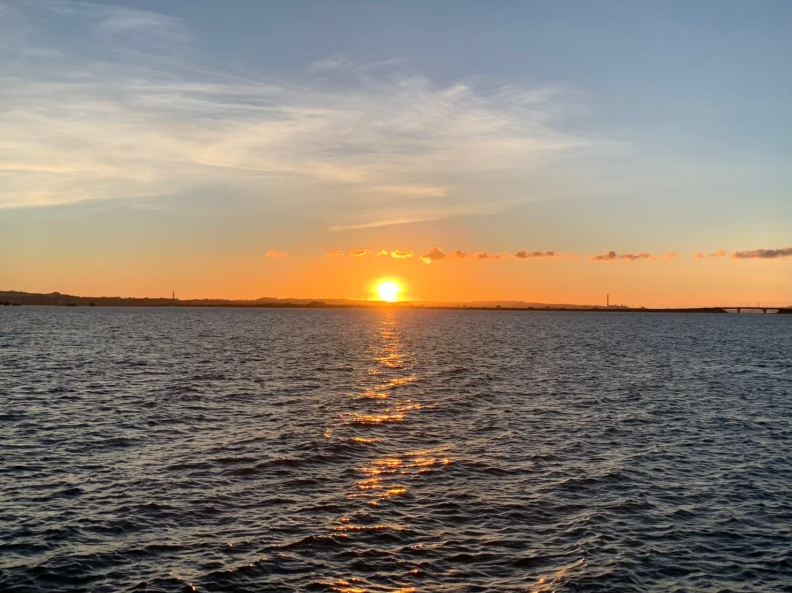

Venture to Okinawa
ここにいる皆が沖縄の文化に触れ、
本島とは違う夏を感じてもらうように
私の思い出とオススメ一覧をご紹介します。
ちなみに沖縄は日本の最南東にある県。元々は琉球王国と呼ばれていたが、
1879年に明治政府の廃藩置県により沖縄が設置されました。
沖縄はは主に3つのエリア、北部、中部、南部にわかれています。
Scroll
沖縄北部 [名護、恩納、本部など]
北部は自然や海に囲まれている地域であり、絶好の
観光スポットがたくさん。ヤンバルという森にある希少動物ヤンバルクイナを見つけてみては？他にもたくさんのリゾートホテルが並んでおり、ホテル観光を楽しむ人にはうってつけの場所。
北部は自然や海に囲まれている地域であり、絶好の
観光スポットがたくさん。ヤンバルという森にある希少動物ヤンバルクイナを見つけてみては？他にもたくさんのリゾートホテルが並んでおり、ホテル観光を楽しむ人にはうってつけの場所。
沖縄中部 [北谷、うるま、嘉手納など]
中部といえばアメリカンビレッジやライカムなどの
ショッピングモールがたくさん。また、たくさんの米軍基地が存在し、外国人や米国関係の店やバーが豊富。特に夜の街中が盛んで、お酒好きの人と乾杯しよう！
中部といえばアメリカンビレッジやライカムなどの
ショッピングモールがたくさん。また、たくさんの米軍基地が存在し、外国人や米国関係の店やバーが豊富。特に夜の街中が盛んで、お酒好きの人と乾杯しよう！
沖縄南部 [那覇、浦添、豊見城など]
南部には那覇市があるため、最も都会化しており、
そのエリア内には国際通りがある。多くの観光人はここを知っているだろう。いろんな店が並び、まさに沖縄の一番大きな商店街とも言える。だがさらに南下すると海鮮が有名な糸満市もあるとか
南部には那覇市があるため、最も都会化しており、
そのエリア内には国際通りがある。多くの観光人はここを知っているだろう。いろんな店が並び、まさに沖縄の一番大きな商店街とも言える。だがさらに南下すると海鮮が有名な糸満市もあるとか
沖縄は日本の自然財宝。
『年間１千万人近くを集める日本の小さな島々』には青く透明な海やとともに、
９つの世界遺産があることや、世界的に有名な長寿の島でもあるうってつけの観光地。
注目情報
📌
- 【令和6年1月30日】 沖縄の海での人身事故、過去5年で最多 死亡・不明は66人に 観光客の事故が増えている地域は宮古島や石垣島
- 【令和6年1月27日】 「値上げに給料追いつかない」 買い物頻度減らす人も 沖縄の県内物価指数、記録的な伸び🔺
- 【令和6年1月27日】 マイナンバーと療育手帳のひも付けミス30件 沖縄県「個人情報漏えいはない」
- 【令和6年1月27日】 ピンク色、山を彩る 名護さくら祭りが開幕 あすまで🌸
- 【令和6年1月26日】 沖縄でプールの水「凍った！」 気温11度、珍現象 南城市
沖縄についてもっと知ろう！！
